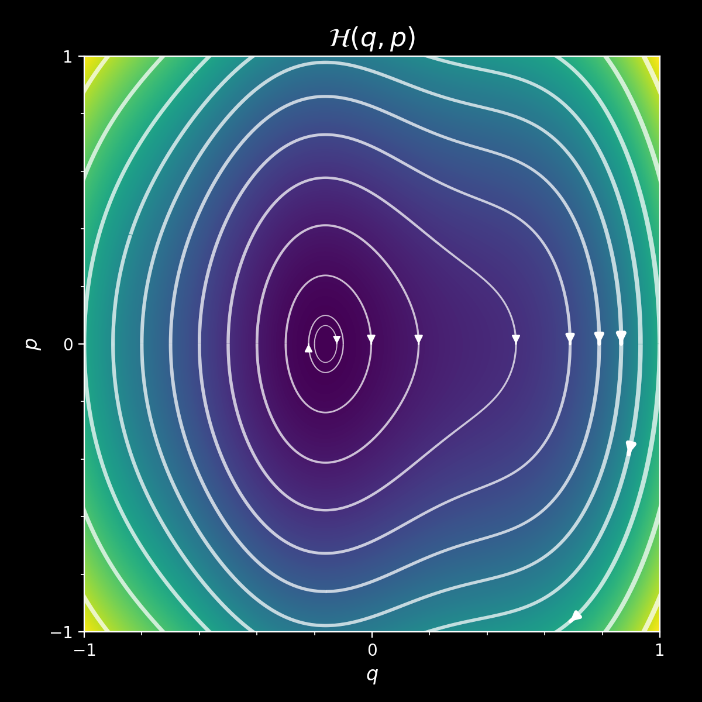
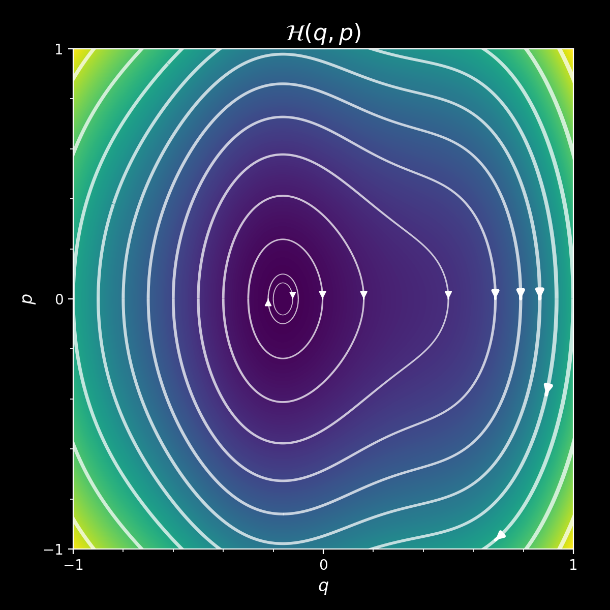
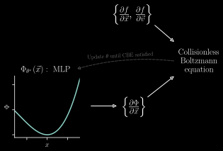
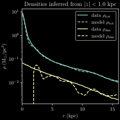
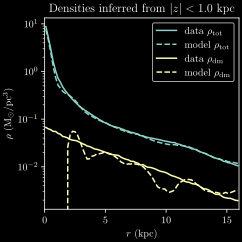
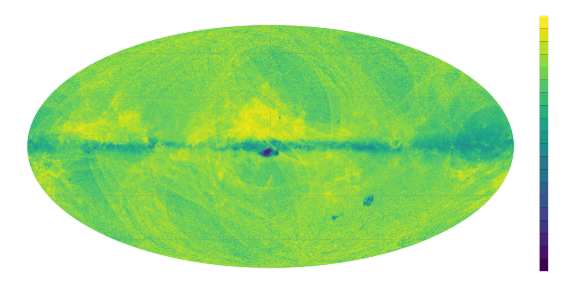
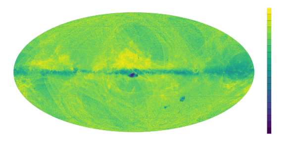

Deep Potential
Determining ùöΩgravity from stellar kinematics
ITA, Heidelberg, 29 November 2023

Gregory M. Green, Taavet Kalda, Soumavo Ghosh (MPIA)

Dynamics
Gaia + spectroscopic surveys are delivering a snapshot of phase space: $$ \left\{ \vec{x} , \vec{v} \right\} $$
Accelerations tell us about the potential: $$ \frac{\mathrm{d}\vec{v}}{\mathrm{d}t} = -\nabla \Phi \left( \vec{x} \right) \, . $$
$\frac{\mathrm{d}\vec{v}}{\mathrm{d}t}$ is unobservable (as of yet).
Knowing $\Phi\left(\vec{x}\right)$ would tell us the distribution of total mass (Baryonic + dark) in the Milky Way.
Stationarity assumption
Gravity too weak
Gravity just right
Gravity too strong
Hamiltonians, distribution functions and stationarity
 



$$\mathcal{H} = \frac{p^2}{2m} + m\Phi\left(q\right) \, ,$$ where $q$ are spatial coordinates, and $p$ are momenta.
$\mathcal{H}$ determines the flow of particles through phase space: $$ \dot{q} = \frac{\partial\mathcal{H}}{\partial p} , \ \ \ \dot{p} = -\frac{\partial\mathcal{H}}{\partial q} \, . $$
$\mathcal{H}$ determines how a distribution function $f\left(q,p\right)$ will change over time.
$\mathcal{H}$ determines how a distribution function $f\left(q,p\right)$ will change over time.
Collisionless Boltzmann Equation (CBE): $$ \frac{\mathrm{d}f}{\mathrm{d}t} = \frac{\partial f}{\partial t} + \sum_{\mathrm{dimension}\ i} \! \left( p_i \, \frac{\partial f}{\partial q_i} -\frac{\partial \Phi}{\partial q_i} \frac{\partial f}{\partial p_i} \right) = 0 \, . $$
⇒ Adjust $\Phi\left(q\right)$ until $\frac{\partial f}{\partial t} \rightarrow 0$ everywhere.
Assumptions
- Stars orbit in a time-independent gravitational potential $\Phi \left( \vec{x} \right)$.
- We have observed the phase-space coordinates of a statistically stationary population of stars.
- Matter density is non-negative everywhere: ${\nabla^2 \Phi \geq 0}$.
We need to be able to calculate gradients of the distribution function:
$$ \require{color} \sum_{\mathrm{dimension}\ i} \! \left( v_i \, {\color{blue} \frac{\partial f}{\partial x_i}} -\frac{\partial \Phi}{\partial x_i} {\color{blue} \frac{\partial f}{\partial v_i}} \right) = 0 \, . $$
Our parameterization of the potential needs to be easily differentiable:
$$ \sum_{\mathrm{dimension}\ i} \! \left( v_i \, \frac{\partial f}{\partial x_i} -{\color{lightgreen} \frac{\partial \Phi}{\partial x_i}} \frac{\partial f}{\partial v_i} \right) = 0 \, . $$
Overview of “Deep Potential”

Fitting the distribution function

Normalizing flows
Invertible transformation: $\vec{x} \leftrightarrow \vec{y}$
$p \left( \vec{x} \right)$ is simple, but $p \left( \vec{y} \right)$ is complicated.
Sampling: draw $\vec{x} \sim p\big(\vec{x}\big)$, transform to $\vec{y}$.
Probability density in $\vec{y}$: $$ p \left( \vec{y} \right) = \left| \frac{\partial \vec{x}}{\partial \vec{y}} \right| p \left( \vec{x} \right) \, . $$
⇒ Requires Jacobian of coordinate transformation.
Fitting the distribution function
$f_{\varphi}$ is a normalizing flow with a large number of fitting parameters, $\varphi$.
Maximize the Poisson likelihood of the stars, varying $\varphi$: $$ \DeclareMathOperator*{\argmax}{arg\,max} \varphi^{\ast} = \argmax_{\varphi} \bigg[ \ln p \left( \left\{ \hat{x} , \hat{v} \right\} \mid \varphi \right) \bigg] = \argmax_{\varphi} \Bigg[ \sum_{\mathrm{star}\ k} \ln f_{\varphi} \! \left( \hat{x}_k , \hat{v}_k \right) \Bigg] \, . $$
Compute gradients of the distribution function

Normalizing flows are differentiable.
In Tensorflow, it's as simple as
with tf.GradientTape() as g:
g.watch(eta)
f = flow(eta)
df_deta = g.gradient(f, eta)
Fitting the potential
Represent $\Phi$ as a neural network: $\Phi_{\theta} \left( \vec{x} \right)$.
⇒ auto-differentiable: $\frac{\partial \Phi}{\partial \vec{x}}$.
Find parameters $\theta$ that minimize non-stationarity:
$$ \require{color} \DeclareMathOperator*{\argmin}{arg\,min} \DeclareMathOperator*{\asinh}{asinh} \theta^{\ast} = \argmin_{\theta} \left< {\color{lightgreen} \asinh \left| \frac{\partial f_{\varphi^{\ast}}}{\partial t} \right| } + \lambda \, \asinh \left( \max \left\{ -\nabla^2 \Phi_{\theta} , \, 0 \right\} \right) \right>_{ \vec{x} , \vec{v} \, \sim \, f_{\varphi^{\ast}} } $$
Penalize negative mass densities:
$$ \require{color} \DeclareMathOperator*{\argmin}{arg\,min} \DeclareMathOperator*{\asinh}{asinh} \theta^{\ast} = \argmin_{\theta} \left< \asinh \left| \frac{\partial f_{\varphi^{\ast}}}{\partial t} \right| + {\color{red} \lambda \, \asinh \left( \max \left\{ -\nabla^2 \Phi_{\theta} , \, 0 \right\} \right) } \right>_{ \vec{x} , \vec{v} \, \sim \, f_{\varphi^{\ast}} } $$
Average over sample drawn from DF:
$$ \require{color} \DeclareMathOperator*{\argmin}{arg\,min} \DeclareMathOperator*{\asinh}{asinh} \theta^{\ast} = \argmin_{\theta} {\color{cyan} \left< {\color{white} \asinh \left| \frac{\partial f_{\varphi^{\ast}}}{\partial t} \right| + \lambda \, \asinh \left( \max \left\{ -\nabla^2 \Phi_{\theta} , \, 0 \right\} \right) } \right>_{ \vec{x} , \vec{v} \, \sim \, f_{\varphi^{\ast}} } } $$
Application:
$N$-body simulation of a barred galaxy

Stationarity in a rotating frame.
$$\frac{\partial f}{\partial t} \neq 0$$
$$ \frac{\partial f}{\partial t} + \left[ \vec{\Omega} \!\times\! \left( \vec{x}\!-\!\vec{x}_0 \right) \!+\! \vec{v}_0 \right] \!\cdot\! \frac{\partial f}{\partial \vec{x}} + \vec{\Omega} \!\times\! \left( \vec{v}\!-\!\vec{v}_0 \right) \!\cdot\! \frac{\partial f}{\partial \vec{v}} = 0 $$
⇒ Infer rotation: $\vec{\Omega}$.
1. Fit distribution function


2. Fit gravitational potential
Accelerations: $\vec{a} = -\nabla \Phi$
Density: $\rho = \nabla^2 \Phi / \left(4\pi G\right)$


Non-stationarities
How much non-stationarity is left over in the system?
Galaxy is more stationary in rotating frame.
$\Omega$ inferred to ~15% accuracy.
Solar-like sub-volume
Similar to what Gaia observes.
$\Omega$ inferred to ~20% accuracy.
 

Radial density profile
$\rho\left(r\right)$
Subtract stars from modeled density to obtain dark-matter density.
Gaia data
6D phase-space data of ~33 million stars in DR3
Modeling the selection function
 


Work on applying Deep Potential to Gaia is ongoing...
Questions?